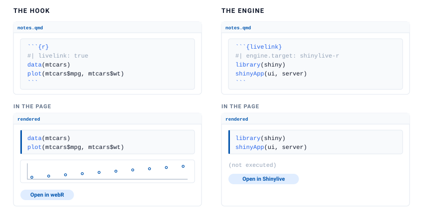
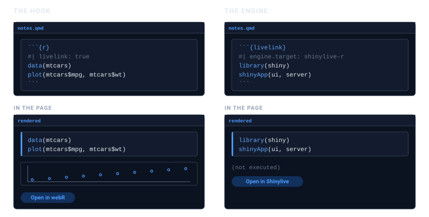
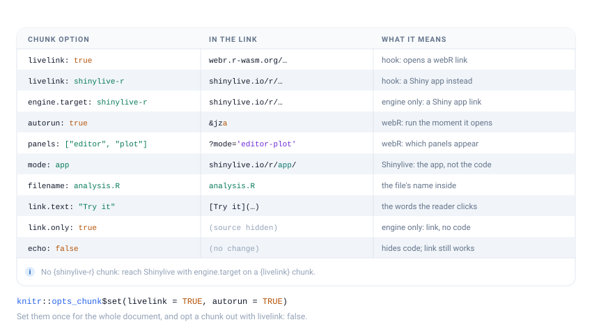
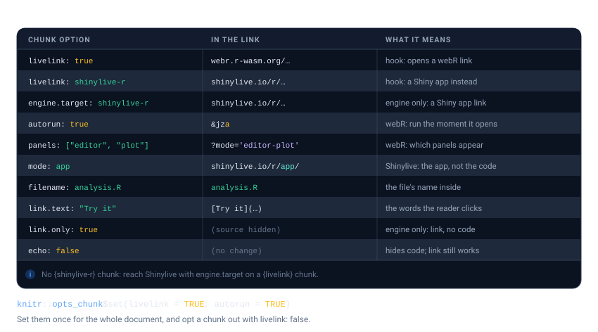

If you write in Quarto or R Markdown, you should not have to build a link in one chunk and paste the URL into another. livelink plugs into knitr, so a chunk can carry its own link.
There are two ways in, and the choice comes down to one question: should the code also run in your document?


The hook: output and a link
Add livelink: true to an ordinary r chunk. Nothing else changes. The chunk runs, its output appears, and a link is added underneath.
```{r}
#| livelink: true
#| autorun: true
# Load the data
data(mtcars)
plot(mtcars$mpg, mtcars$wt) # a comment your reader will actually see
```That is a real chunk. Here it is, running in this very vignette. The plot below is drawn by R, here, and the link under it opens the same code in the browser:
This is usually what you want. Readers see the result, and can still go and poke at it.
The engine: a link, and no execution
Sometimes the code must not run in your document: a Shiny app, something needing a package you have not installed, something slow. Use a ```{livelink} chunk. The code is displayed, a link is produced, and nothing is executed.
```{livelink}
#| engine.target: shinylive-r
#| mode: app
library(shiny)
shinyApp(fluidPage(sliderInput("n", "n", 1, 100, 50)), function(input, output) {})
```That is how the Shiny examples in these vignettes are built. livelink does not depend on shiny, and does not want to.
There is no
{shinylive-r}chunkIt is tempting to want a
```{shinylive-r}chunk to match Shinylive’s own naming. knitr cannot provide one: its chunk syntax forbids a hyphen in an engine name, and in Quarto a{shinylive-r}cell is handed to the Shinylive extension, not to knitr. Name Shinylive throughengine.targeton a livelink chunk instead, as above.
Chunk options
Each option changes one part of the link. The figure below reads left to right: the option you set, the piece of the URL it changes, and what that means for your reader. The full list is at the end of this article, in Every chunk option.


echo does not do what you might think
It is natural to assume the code must be visible for a link to be made. It does not.
echo controls whether the source is displayed in your page. The link is built from the chunk’s source, which knitr hands over regardless. So echo: false gives you a working link whose code you simply cannot see in the document:
#> [1] 20.09062The code, and that comment, are both in the link. Follow it and look.
eval: false is the other half: the chunk is shown but not run, which makes an r chunk behave rather like the engine.
Setting options once
Chunk options are knitr options, so opts_chunk sets them for the whole document:
knitr::opts_chunk$set(livelink = TRUE, autorun = TRUE)Every subsequent r chunk then carries a link, and you opt one out where you do not want it:
```{r}
#| livelink: false
# scaffolding the reader does not need a link for
setup_the_data()
```This is worth doing in course notes, where nearly every chunk should be something a student can open and edit.
Why not a braced expression?
webr_repl_link({ ... }) looks like it ought to work in a document. It does, but it loses your comments.
knitr runs every chunk through evaluate::evaluate(), which strips source references as it goes, keep.source or not. Comments live only in those references, so a { } expression inside a knitted document reaches livelink with its comments already gone. There is no option that changes this: the source is discarded before livelink ever sees the expression, so nothing livelink could do would bring the comments back.
Both the hook and the engine sidestep the problem entirely. They are handed the chunk’s raw source text, comments and all, which is the one route by which a comment reaches a link from a rendered document. That is the whole reason they exist.
Use braces in an interactive session, where source references are present. Inside a document, use a chunk.
Every chunk option
Keep this section as a reference to return to. It is the figure above in full, one row per option: the option you set, the part of the link it changes, and what that means for your reader.
| Option | In the link | What it means |
|---|---|---|
livelink: true |
webr.r-wasm.org/… |
hook only: turn an r chunk into a webR link |
livelink: shinylive-r |
shinylive.io/r/… |
hook only: a Shiny app instead of a REPL (also "webr", "shinylive-py") |
engine.target: shinylive-r |
shinylive.io/r/… |
engine only: the same targets, for a livelink chunk |
autorun: true |
&jza (the a flag) |
webR only: run the code the moment the link opens |
panels: ["editor", "plot"] |
?mode='editor-plot' |
webR only: which panels appear |
mode: app |
shinylive.io/r/app/ |
Shinylive only: the running app, not the code |
filename: analysis.R |
analysis.R |
the file’s name inside the environment |
link.text: "Try it" |
[Try it](…) |
the words the reader clicks |
link.only: true |
(source hidden) | engine only: emit the link without showing the source |
echo: false |
(no change) | hides the code in the page; the link still works |
Any of these can be set once for a whole document, as Setting options once shows.